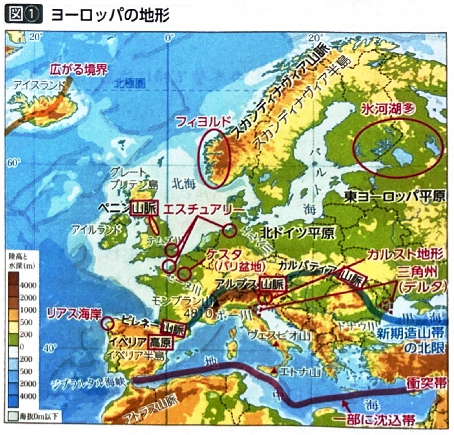
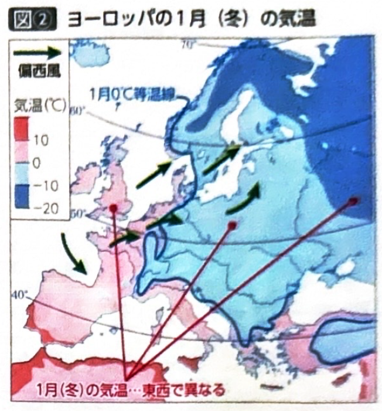
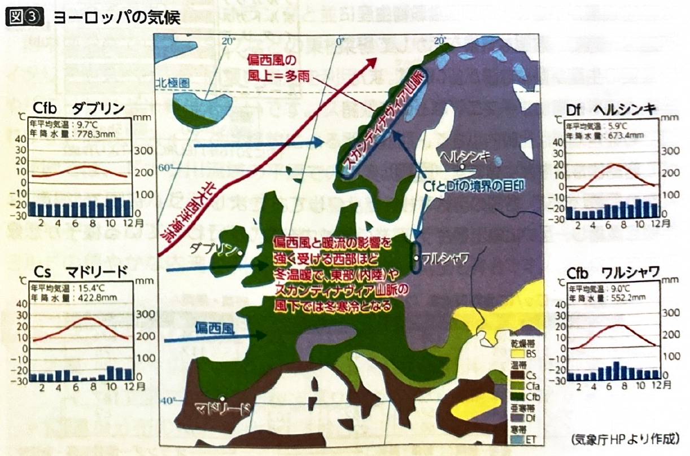
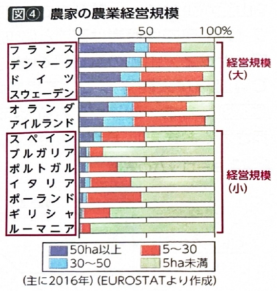
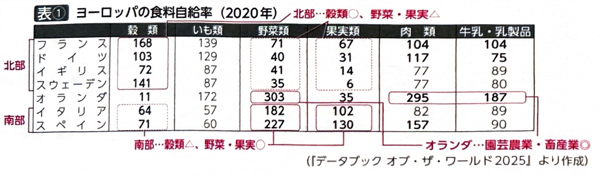
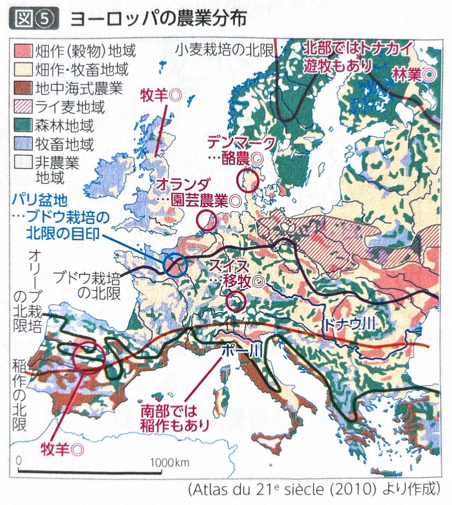

第5章 ヨーロッパ - 自然環境と農林水産業
ポイント総復習
1. ヨーロッパの地形
ヨーロッパは入試最頻出地域の1つです。同じヨーロッパでも「西欧と東欧」「北欧と南欧」など、地域ごとの違い（域内差）を意識することが重要です。
| 地体構造・特徴 | 具体的な地形の例 |
|---|---|
| プレートの境界 | アイスランド島は広がる境界（海嶺）に位置し、線状噴火がみられます。また、地中海周辺は狭まる境界（沈み込み帯）にあたり、イタリア南部では地震や火山活動が活発です。 |
| 新期造山帯 （ヨーロッパ南部） |
ピレネー山脈、アルプス山脈、カルパティア山脈より南の範囲です。起伏が大きい山がちな地形です。 |
| 古期造山帯・安定陸塊 （北部・中部） |
スカンディナヴィア山脈やペニン山脈などの古期造山帯のほか、バルト海周辺は低平な楯状地（安定陸塊）です。フランスのパリ盆地には、硬い地層と軟らかい地層が交互に重なってできたケスタという波状の地形がみられます。 |
| 氷河地形と海岸線 | 北部はかつて大陸氷河に覆われていました。ノルウェーのフィヨルド、フィンランドの氷河湖が有名です。また、スペイン北西部のリアス海岸や、テムズ川やセーヌ川の河口にあるエスチュアリー（三角江）などの沈水海岸もよく出題されます。 |

2. ヨーロッパの気候
ヨーロッパの気候を理解する上で最も重要なポイントは、「暖流」と「偏西風」の影響の違い（東西の差）です。
| 気候区 | 分布と特徴 |
|---|---|
| 西岸海洋性気候 （Cfb） |
大陸の西部に分布します。海からの偏西風と、沖合を流れる暖流（北大西洋海流）の影響を強く受けるため、高緯度であるにもかかわらず冬が比較的温暖になります。ヨーロッパには風を遮る高い山脈が少ないため、内陸部までこの気候が広く分布します。 |
| 亜寒帯湿潤気候 （Df） |
大陸の東部（ポーランド付近以東）に分布します。海からの暖気の影響が弱まるため、冬が寒冷になります。また、スカンディナヴィア山脈の風下側（東側）も、山脈に風が遮られるためDfとなります。 |
| 地中海性気候 （Cs） |
大陸の南部（地中海沿岸）に分布します。夏は亜熱帯高圧帯の影響で高温・少雨となるのが特徴です。 |


3. ヨーロッパの農業の全体像と経営規模
気候や地形の違いから、各国で得意な作物を栽培し、互いに輸出し合う「地域内分業」が行われています。
- 地域別の農業形態
- 北部（冷涼・やせ地）とアルプス：酪農
- 中部：混合農業（北・東部はライ麦とジャガイモ、南・西部は小麦とトウモロコシ）
- 南部（夏少雨）：地中海式農業、輸送園芸
- 経営規模の地域差
- 大規模：イギリスやフランスなど、広大な平野が広がる北部の国々。
- 小規模：イタリアやスペインなど山がちな南部の国々や、ルーマニアなど農業人口率が高い東欧の国々。


4. 各国の農業の特徴
| 国名 | 農業の特徴とキーワード |
|---|---|
| フランス | ヨーロッパ最大の農業国。パリ盆地の広大な緩斜面で大規模な小麦栽培が行われます。また、ワイン生産が盛んですが、ブドウ栽培の北限がパリ盆地付近であることは入試頻出です。 |
| ドイツ | やや冷涼な気候で酪農や混合農業が盛ん。ライ麦やジャガイモを栽培し、豚の飼育頭数はヨーロッパ上位です。 |
| オランダ | 国土の一部を干拓した「ポルダー」を利用し、酪農や輸出用の花卉（かき）・野菜を栽培する園芸農業が盛んです。ICTを導入したスマート農業も発達しています。 |
| デンマーク | 農業協同組合などを通じて競争力の高い酪農や肉類の生産・輸出が行われています。 |
| イタリア スペイン |
地中海式農業のほか、夏の高温を利用し、灌漑（かんがい）による稲作も盛んです（リゾットやパエリアなど）。スペインのイベリア高原では羊の移牧もみられます。 |
| 北欧 | スウェーデン・フィンランドではタイガ（冷帯林）を活かした林業、ノルウェーではフィヨルドの穏やかな内湾を利用したサケの養殖が盛んです。 |

基礎問題（理解度チェック）
Q1. ヨーロッパの地形について、空欄を埋めなさい。
アイスランド島はプレートの
に位置し、海嶺の一部が地上に現れたものである。ヨーロッパ南部はアルプス山脈などに代表される
に属す。また、北欧のノルウェーなどにはかつての氷河による侵食でできた
があり、イギリスのテムズ川の河口には
という沈水海岸が発達している。
Q2. ヨーロッパの気候について、空欄を埋めなさい。
ヨーロッパ西部の気候は、一年中海から吹き込む
と、その沖合を流れる暖流である
の影響を強く受けるため、高緯度のわりに冬が温暖な
となる。一方、大陸の東部やスカンディナヴィア山脈の風下側では海からの暖気の影響が弱まるため、冬が寒冷な
となる。
Q3. ヨーロッパの農業について、空欄を埋めなさい。
ヨーロッパの農業経営規模は地域差があり、イギリスやフランスなど広大な平野が広がる
の国々では大規模であるのに対し、山がちな地形が多い
の国々では小規模な傾向がある。また、オランダでは「
」とよばれる干拓地を利用して酪農や、花卉・野菜を栽培する
が盛んに行われている。
Q4. フランスはヨーロッパ最大の農業国であり、パリ盆地などの広大な平野で大規模な小麦栽培が行われている。また、ワイン生産も盛んだが、ブドウ栽培の北限は地中海沿岸部にとどまっている。
Q5. ヨーロッパでは全体的に、偏西風や暖流の影響を受ける西部から、内陸に向かって東部へ行くほど、冬の平均気温が下がって寒冷になっていくという特徴がある。